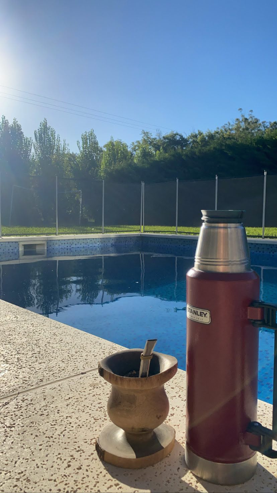

En la pileta

No hay nada como una tarde de verano al lado del agua. El mate en la pileta es un clásico indiscutido para pasar el calor (aunque el agua del termo esté hirviendo).
Es el momento ideal para relajar, leer un libro o simplemente disfrutar del sol mientras compartimos la ronda.